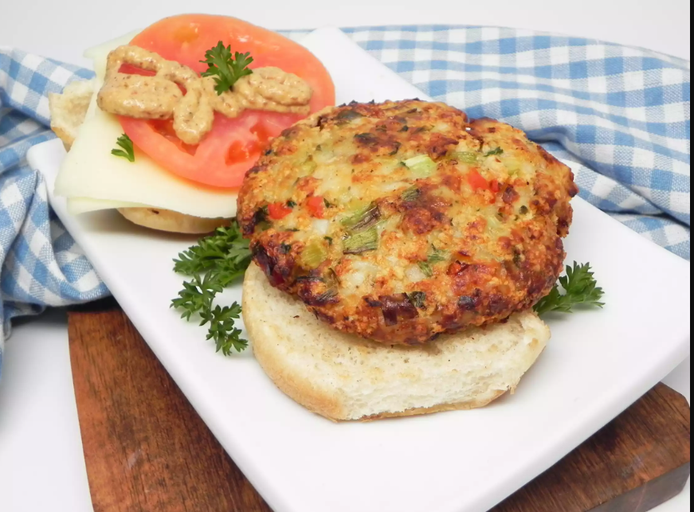

Tilapia Burger Patties

Description
These are easy to make tilapia burger patties. Can double the batch to make ahead and freeze. You can serve them as open-faced fish burgers, or a protein main with a fresh, crispy tossed salad.
Ingredients
- 5 (4 ounce) fillets tilapia, cut into cubes
- 3 tablespoons olive oil, divided, or as needed
- 2 bunches green onions, thinly sliced, with green tops separated from white bottoms
- 1 medium bell pepper, minced
- 2 stalks celery, minced
- 5 cloves garlic, chopped
- 1 bunch fresh parsley, chopped
- 1 teaspoon salt, or to taste
- 1 pinch onion powder, or to taste
- 1 pinch garlic powder, or to taste
- 1 pinch red pepper flakes, or to taste
- 1 pinch ground black pepper to taste
- 1 cup panko bread crumbs
- 1 large egg
- Place tilapia in the bowl of a food processor and pulse until finely chopped.
- Heat 1 tablespoon olive oil in a skillet over medium-high heat. Add white parts of the green onions, bell pepper, celery, and garlic to the hot oil and saute until they start to brown, 5 to 7 minutes. Add green parts of the green onions and parsley; saute, 2 to 3 minutes more. Let cool, about 10 minutes.
- Combine the veggie mixture with the fish. Add salt, onion powder, garlic powder, red pepper flakes, and black pepper; mix with your hands until well combined. Mix in bread crumbs and egg until thoroughly combined. Shape into burger-sized patties.
- Heat remaining olive oil on a griddle over medium to medium-high heat. Cook patties in the hot oil, working in batches as needed, until nicely browned, 3 to 5 minutes on each side.